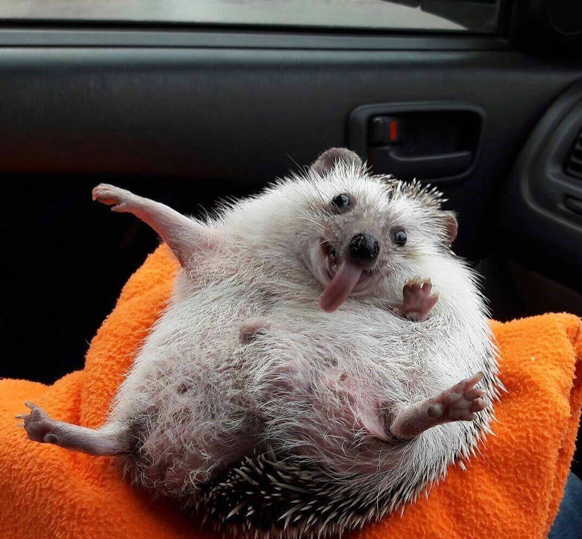
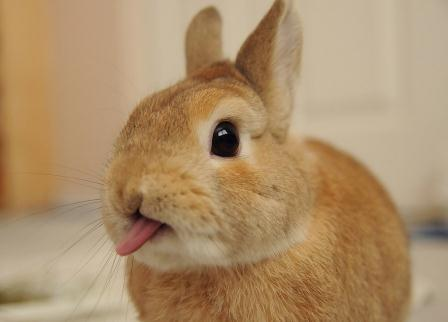

Привет для Программиста! (￣▽￣)/
А тут я добавила картиночек, и одна одна из них ссылка ┐(￣∀￣)┌
Просто кролик и ежик, это же так супер мило, камон. А еще этих кроликов можно посчитать (до10) (ﾉ◕ヮ◕)ﾉ*:･ﾟ✧

Ну или вернитесь на одну из предыдущих страниц, как хотите самая первая, не самая первая.